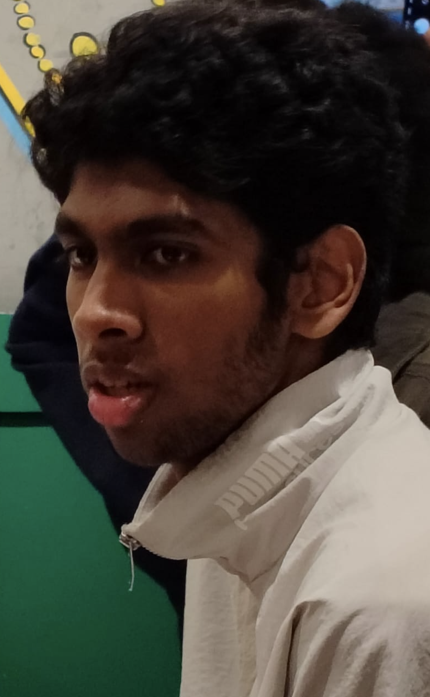
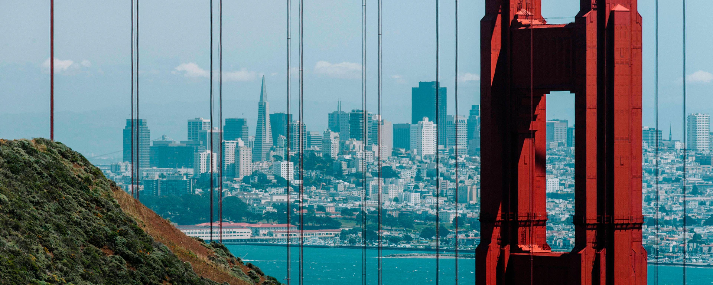

ARJUN



Me
Hey, I’m Arjun. I was born in San Francisco, USA, and grew up mostly in Hyderabad, India. What excites me? Tech — its constant evolution and infinite potential fascinate me. Sports — the high stakes and real-life storylines keep me hooked, and playing offers a perfect escape from routine. Film — I’m drawn to artistic style and creative storytelling.
My Education
Currently pursuing Computer Science at IIIT Hyderabad as an undergrad. Previously studied at FIITJEE and JHPS.
- Couple of Achievements:
- - World Robotics Olympiad - Placed Third in the Country
- - Young Innovators Program, IIT Kharagpur - Semi Finalist
My Technical Skills
- Python, C++, JavaScript
- HTML, CSS, React
- Arduino, Robotics prototyping
- Git, GitHub, Linux (Oh My Zsh)